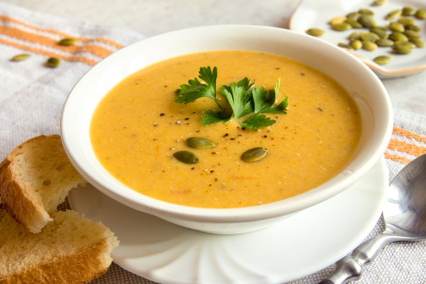
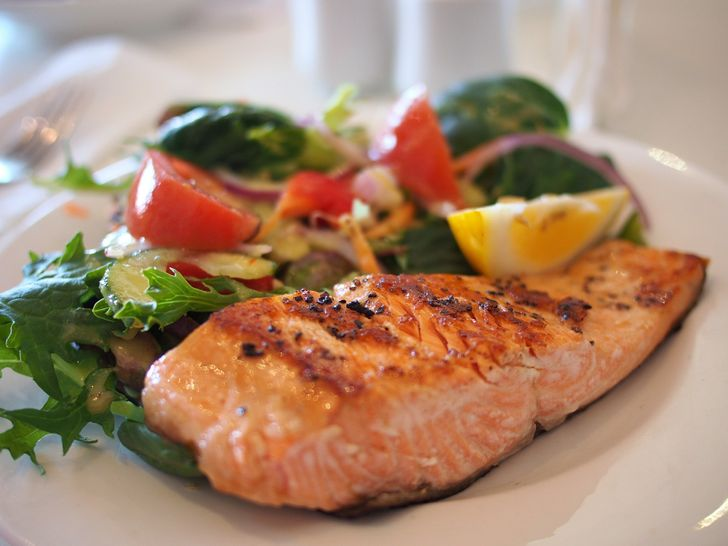
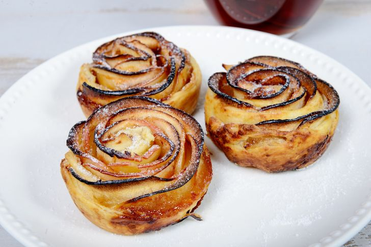
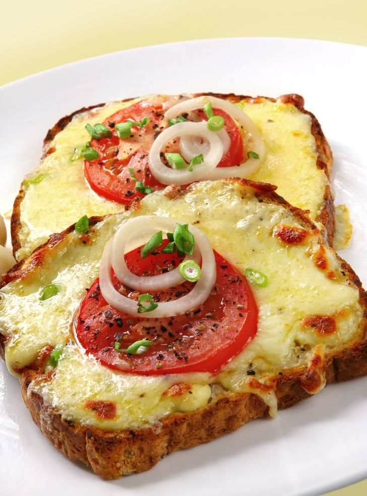

Cortar la calabaza en trozos y salpimentar.
Hornear la calabaza a 180º C hasta que esté blanda.
Caramelizar las cebollas a fuego lento con la mantequilla.
Freir los ajos previamente troceados.
Licuar la calabaza con el ajo y la cebolla. Añadir un poco de agua si es necesario, para que quede la consistencia de crema.
Decorar con las almendras laminadas.

Engrasar un fuente de horno y colocar el salmón con la piel hacia abajo.
Salpimentar y añadir el eneldo y la ralladura del limón.
Hornear a 180º C durante 15 minutos.
Añadir las alcaparras antes de servir.

Cortar las manzanas peladas en láminas finas.
Estirar el hojaldre, pintar con mantequilla y espolvorear azúcar moreno.
Colocar la manzana sobre el hojaldre hecho tiras, y enrollar para que quede forma de flor.
Hornear a 180º C hasta que el hojaldre se dore.

Partir la cebolla en tiras finas
Poner la mantequilla en una sartén y cuando esté derretida añadir la cebolla.
Cocinar a fuego muy lento para que la cebolla no se deshidrate.
Tostar el pan, añadir el queso brie y encima la cebolla cocinada y unas rodajas de tomate.
